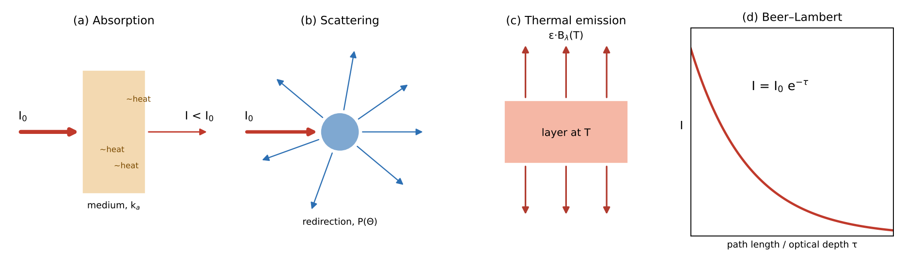
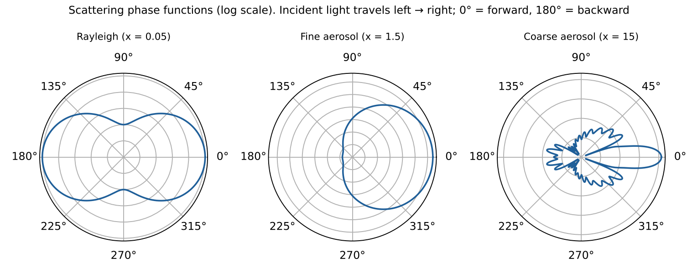
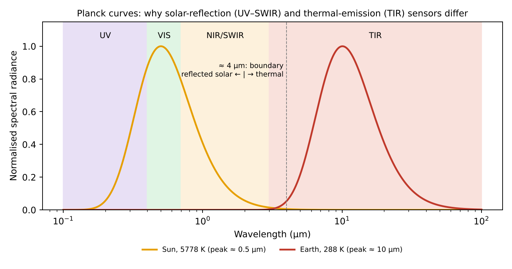
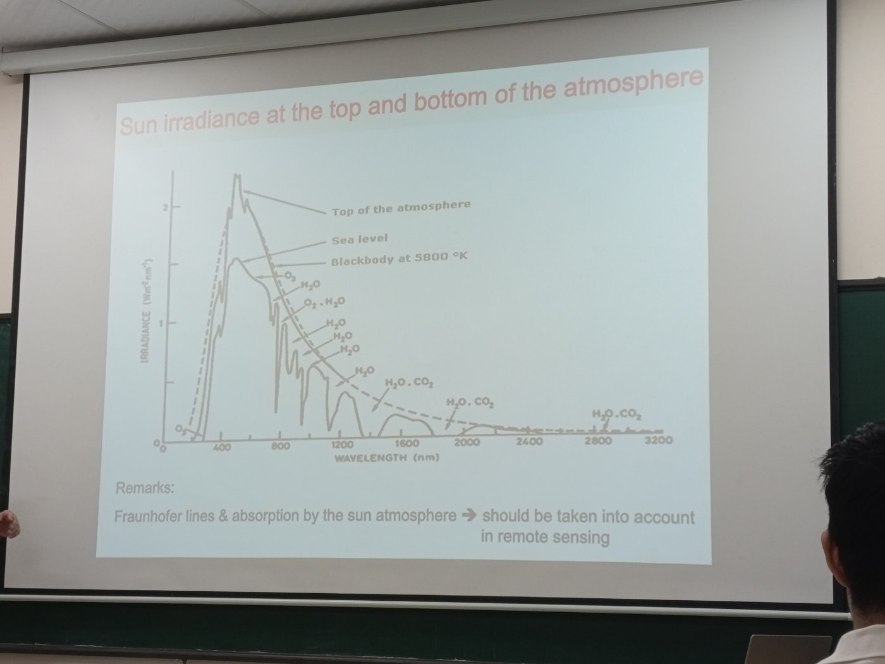

Trang chủ › M2 · Tương tác ánh sáng – vật chất
- Describe the main physical mechanisms of interaction between light and matter that modify the intensity of radiation reaching a radiometric sensor.
- Provide a clear description, the main equations, and schematics of each of these mechanisms.
Ba cơ chế, nói nôm na
Ánh sáng đi từ nguồn (Mặt Trời hoặc mặt đất) tới cảm biến chịu ba tác động. Hấp thụ như tấm kính màu nuốt bớt ánh sáng. Tán xạ như sương mù làm tia sáng bẻ sang hướng khác. Phát xạ như chính khí quyển ấm và tự phát ánh sáng hồng ngoại.
Hấp thụ và tán xạ cùng lấy năng lượng khỏi chùm (gộp thành suy giảm / extinction); phát xạ và tán xạ từ hướng khác thêm năng lượng vào chùm. Phản xạ bề mặt cũng quan trọng với bức xạ nhìn từ vũ trụ.

Radiation travelling from the source to the sensor is modified by three processes: absorption and scattering (together forming extinction) remove energy from the beam, while emission and scattering into the beam add energy. Surface reflection also matters for the radiance seen from space.
Hấp thụ (absorption)
Một phân tử hấp thụ photon khi năng lượng khớp một bước chuyển: E = hν = E₂ − E₁. Mỗi khí có phổ hấp thụ riêng σ(λ) — chính là “dấu vân tay” để nhận ra khí.
| Loại chuyển mức | Vùng phổ | Ví dụ |
|---|---|---|
| Điện tử | UV – khả kiến | O₃ Hartley–Huggins 250–350 nm; NO₂ 400–450 nm; SO₂ 300–320 nm |
| Dao động – quay | Hồng ngoại | CO₂ 15 µm và 4,3 µm; O₃ 9,6 µm; CH₄ 7,7 và 2,3 µm; CO 4,6 và 2,3 µm; H₂O |
| Quay thuần | Vi sóng / hồng ngoại xa | H₂O, O₂ 60 GHz, ClO |
Dạng vạch phụ thuộc áp suất (mở rộng Lorentz, trội ở khí quyển thấp) và nhiệt độ (mở rộng Doppler, trội ở độ cao lớn).
Tán xạ (scattering)
Photon bị đổi hướng nhưng giữ nguyên bước sóng (đàn hồi). Phân bố góc mô tả bởi hàm pha P(Θ). Chế độ phụ thuộc tham số kích thước x = 2πr/λ (xem module 7).
| Loại | Hạt | Đặc điểm |
|---|---|---|
| Rayleigh (x ≪ 1) | Phân tử N₂, O₂ | σ ∝ λ⁻⁴; P(Θ) = ¾(1 + cos²Θ) đối xứng; trời xanh |
| Mie (x ~ 1) | Aerosol, giọt mây | Phụ thuộc λ yếu (τ ∝ λ^−α); đỉnh mạnh về phía trước |
| Raman (không đàn hồi) | N₂, O₂ (quay) | Đổi bước sóng; gây hiệu ứng Ring (làm đầy vạch Fraunhofer) trong DOAS |
Tỉ số tán xạ ở 450 nm so với 650 nm = (650/450)⁴ = 4,35 lần, vì thế ánh sáng xanh bị tán xạ nhiều hơn đỏ.

Phát xạ (emission)
Mọi vật có T > 0 K đều phát xạ. Vật đen phát xạ theo hàm Planck; môi trường thật phát xạ ε·B. Ở LTE, định luật Kirchhoff: ελ = αλ — khí hấp thụ ở bước sóng nào thì cũng phát xạ ở bước sóng đó.
- Mặt Trời (5778 K): λmax = 0,50 µm (khả kiến).
- Trái Đất (288 K): λmax = 10,1 µm (hồng ngoại nhiệt); M = 390 W m⁻².
Phát xạ trội ở λ > ~4 µm (hồng ngoại nhiệt, vi sóng), còn phản xạ ánh sáng Mặt Trời trội ở UV – khả kiến – cận hồng ngoại.

Beer–Lambert và độ dày quang học
Đường nghiêng: τnghiêng = τđứng / cos θ (mặt phẳng song song).
- τđứng = 0,5; θ = 60°; cos 60° = 0,5
- τnghiêng = 0,5 / 0,5 = 1,0
- T = e−1 = 0,3679 ≈ 37%

Phương trình truyền bức xạ (RTE)
- Số hạng 1 = suy giảm (mất).
- Số hạng 2 = phát xạ nhiệt (được).
- Số hạng 3 = ánh sáng từ các hướng khác tán xạ vào đường ngắm (được).
Hai trường hợp rút gọn thường dùng
Bề mặt Lambert: I = A·F0·cos θ0 / π (A: albedo).
Exam checklist — phải nêu được
- Three mechanisms: absorption (quantised transitions, σ(λ) fingerprint), scattering (Rayleigh/Mie, phase function, ω₀), emission (Planck, Kirchhoff).
- Beer–Lambert: I = I₀ e^−τ, τ = ∫ k_e ds, k_e = k_a + k_s.
- Write the full RTE and identify each term; Schwarzschild for thermal IR.
- Draw: absorbing slab, scattering particle with arrows in all directions, emitting layer, exponential decay curve.
- Ba cơ chế: hấp thụ (chuyển mức năng lượng điện tử, dao động, quay → mỗi khí có dấu vân tay phổ), tán xạ (đổi hướng photon: Rayleigh ∝ λ⁻⁴, Mie), phát xạ nhiệt (Planck, Kirchhoff ε = α).
- Hấp thụ + tán xạ = suy giảm (extinction), tuân theo định luật Beer–Lambert I = I₀·e^(−τ).
- Phương trình truyền bức xạ: suy giảm − phát xạ + tán xạ vào hướng nhìn.
Thực hành tính toán
Các công cụ dưới đây chạy ngay trong trình duyệt, đã đối chiếu với Python:
Beer–Lambert và góc thiên đỉnh Planck, Wien và nhiệt độ sáng
Slide bài giảng (12 slide, phím ← → hoặc nút)
Tự kiểm tra nhanh (10/19 câu)
Mở ngân hàng đầy đủ: 19 trắc nghiệm + 3 tự luận →
← M1 · Bể chứa & thời gian sốngM3 · Truy hồi khí vết: cột và profil →